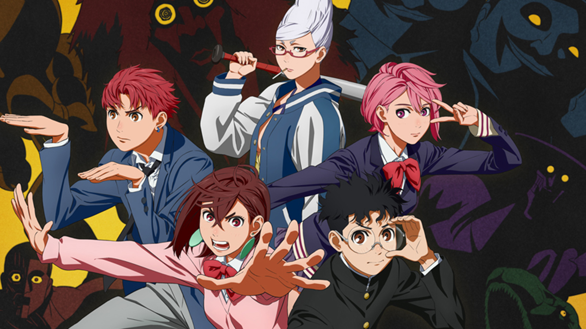

Binge, Relax, Repeat
Animes
>^^ >^^ Dan Da Dan ^^< ^^<
Dan Da Danfollows two middle schoolers, Momo and Okarun, who battle aliens, yokai (spirits), and other strange creatures, blending romance, comedy, and action with a strong focus on internet culture. The series features unique characters, including Turbo Granny and conspiracy theories into its bizarre plot
+~+~+ One Piece +~+~+

One Piecefollows the adventures of Monkey D. Luffy and his crew, the Straw Hat Pirates, as he explores the Grand Line in search of the mythical treasure known as the "One Piece" to become the next King of the Pirates.
~*~*~ Jujutsu Kaisen ~*~*~

Jujutsu Kaisenfollows high school student Yuji Itadori as he joins a secret organization of Jujutsu Sorcerers to eliminate a powerful Curse named Ryomen Sukuna, of whom Yuji becomes the host.
Press Start to Play
Games
=*=*=*= Marvel Rivals =*=*=*=

Marvel Rivals is a hero shooter video game developed and published by NetEase Games in collaboration with Marvel Games. The game is free-to-play with a current lineup of 42 characters from Marvel Comics, and features cross-play across all supported platforms.
*^-^* Animal Crossing *^-^*
Animal Crossing is a life-simulation game where players create and manage their own island paradise. The player character is a human who lives in a village inhabited by various animals and can engage in various activities such as fishing, insect catching, and fossil hunting. The series is known for its open-ended gameplay, humorous dialogue, hourly music, and the simulation of real passage of time.
* * * Kingdom Come: Deliverance 2 * * *
Kingdom Come: Deliverance 2 transports players into the chaotic Kingdom of Bohemia, a country that was a part of the Holy Roman Empire and is now the Czech Republic, in the early 15th century. The sequel continues the gripping saga of Henry, the humble son of a blacksmith, as he finds himself thrust into the heart of a raging civil war. This time, Henry’s journey brings him face-to-face with the Holy Roman Emperor Sigismund and his allies, ending in the dramatic conclusion to his tale.